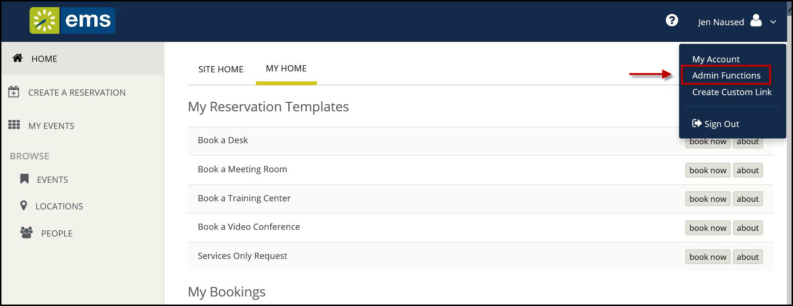

Follow the steps in this section to authenticate your users via the Lightweight Directory Access Protocol (LDAP). After successful connection to the platform API, the user will log in following the scenario below:
If the credentials are missing when the user taps Sign In, an error message will display stating that fields are required. If the platform API is unable to verify the credentials, the mobile app will inform the user based on that response.
.columbia-article-topic #mt-toc-container {
display:block !important;
}
#mt-toc-container {
display: block !important;
}
Process Overview:
To use LDAP authentication, you will
1. Navigate to Platform Services admin portal ( https://yourcompany.com/ems-platform-api) and select Integrations from the sidebar. Select EMS Mobile and choose LDAP from everyday user authentication method dropdown.
2. Navigate to the EMS Web App > Admin Functions page, listed under your name in the upper right corner of the application.

3. Tap the LDAP Configuration tab and complete all required LDAP information, and then test your configuration.


|
Tip:This is the same process you use for authenticating {{product_webapp}} with LDAP. The EMS Platform Services API uses the same configuration information. |
Section below is single-sourced from https://success.emssoftware.com/EMS_...
wiki.page("EMS_V44.1/Installing_and_Setting_Up_EMS/01-Introduction/Configuring_Integrated_Authentication_for_the_EMS_Web_App/05-LDAP_Authentication")
Assuming you have installed the EMS Platform Services e.g. https://yourcompany.com/ems-platform-api, then you can test the configuration with a simple curl command:
curl -X GET -H 'x-ems-consumer: MobileApp' https://ems.yourcompany.com/endpoint/api/v1/health
|
|
Tip:You can also use the API's Swagger interface to accomplish this goal. |
You should see a portion of the JSON response that looks like this (unrelated details omitted for brevity):
{
...
"additionalProperties": {
"authConfig": {
"activities":"ldap" // <-- these are the critical lines
"ui":"ldap"
}
}
}
Assuming you have installed the EMS Platform Services API at https://ems.yourcompany.com/endpoint, you can test the authentication with a simple curl command:
curl -X POST -H 'x-ems-consumer: MobileApp' -H 'Content-Type: application/json' -d '{"username":"your_username", "password":"your_password"}' https://ems.yourcompany.com/endpoint...authentication
...where your_username and your_password are your credentials.

|
Note: api/v1/authentication is the endpoint within the API where your request must be sent. |
Page tags: article:topic